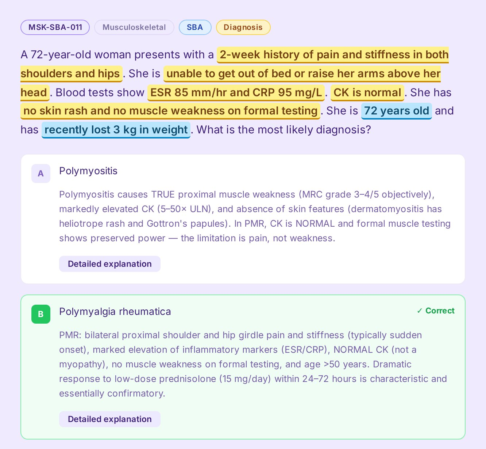
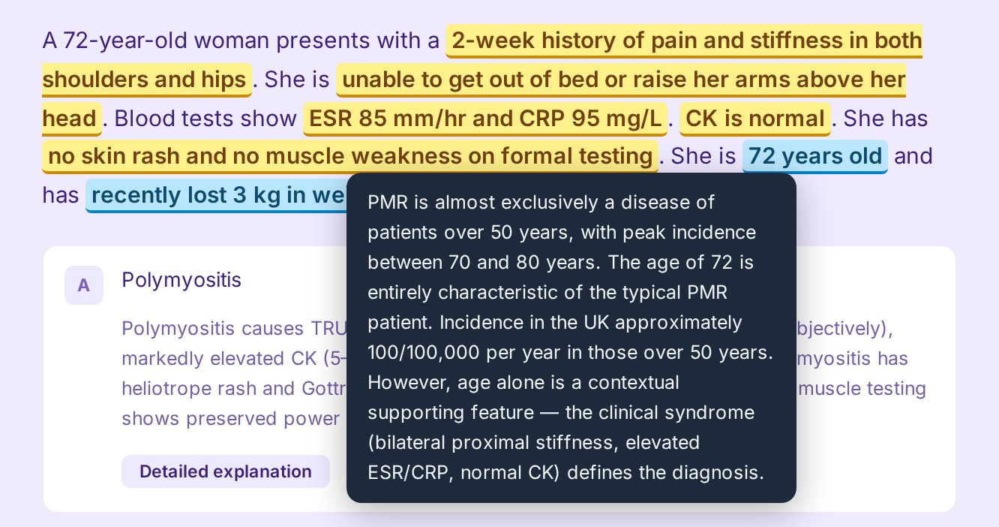
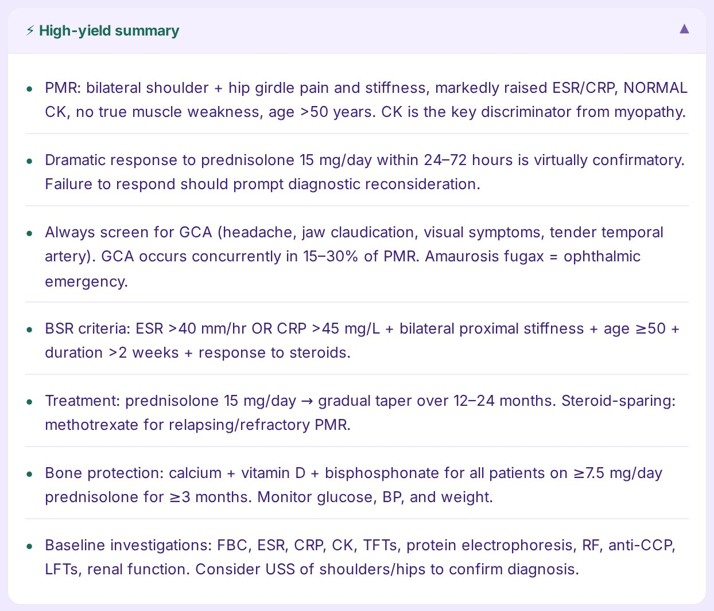

Our mission is simple: to give every doctor the best possible chance of securing the specialty they've worked for — through smarter preparation, better questions, and a deeper understanding of what the MSRA actually demands.

"We believe that preparing for specialty training should make you a better clinician, not just a better guesser."
Answer a question in Tutor Mode and Ossify shows you exactly how the answer was reached, not just whether you got it right.

After you answer, the words that point to the diagnosis are highlighted in yellow and the red herrings in blue. Hover any of them to see why it matters.

Each answer option has a short explanation and a detailed one covering the mechanism, the differentials and guideline-based management. A high-yield summary distils what to remember for the next question like it.
Sign up in a minute and go straight to your dashboard.
Work through any of the 12 specialties with explanations, highlighted clues and high-yield summaries.
97 questions in 75 minutes with no feedback until the end, then a full review of every answer.
Your dashboard shows where you are strongest and weakest; practise your weak areas and clear your revision queue.
"We are a team of doctors who sat where you're sitting. That shapes everything about how this platform is built."
Ossify was created by a group of practising doctors who experienced firsthand what it means to prepare for the MSRA with inadequate tools. The question banks available on the market felt recycled, the explanations were shallow, and the learning barely felt like learning at all.
So we built something better. Every question on Ossify is crafted to reflect the real complexity of the Professional Dilemmas and Clinical Problem Solving papers.
Read our story →Join doctors preparing smarter with Ossify. No free trial — because the quality of what we've built doesn't need one.